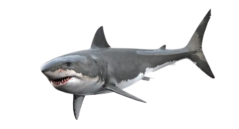

Deep Ocean is a website that provides comprehensive information about the many different creatures that live in the ocean. The site features articles, images, and videos about a wide variety of Deep Ocean, including fish, sharks, whales, dolphins, sea turtles, and more. Deep Ocean also provides information about ocean ecosystems and the threats that these ecosystems face. The site is a valuable resource for anyone interested in learning more about the amazing creatures that live in our oceans.

While traveling aboard the Beagle, Darwin theorized about the ocean, with his attention drawn to coral reefs and coral islands. Naturalists before him observed that reefs are built by huge colonies of small coral animals, which leave behind cup-shaped skeletons that accumulate over time.
Sylvia Earle needs no introduction to most. The renowned oceanographer and marine biologist has spent the better part of seven decades exploring the world`s ocean. In that time she has become one of the world`s preeminent experts on marine research and conservation. National Geographic`s Rosemary and Roger Enrico Chair for Ocean Exploration, Sylvia Earle is founder of Mission Blue, SEAlliance and Deep Ocean Exploration and Research. She is also the Council Chair of the Harte Research Institute for Gulf of Mexico Studies, former chief scientist of NOAA and a founding Ocean Elder.
Deep Ocean is a valuable resource for anyone interested in learning more about the amazing creatures that live in our oceans. The site is easy to use and features a wealth of information about Deep Ocean. Whether you are a student, a teacher, or simply someone who loves the ocean, Deep Ocean is a great place to learn more about these fascinating creatures.